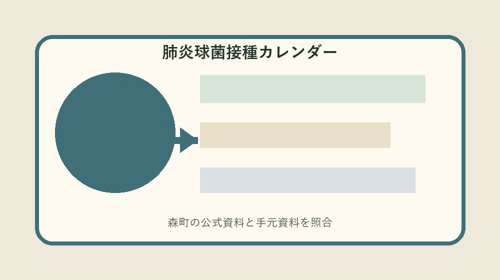
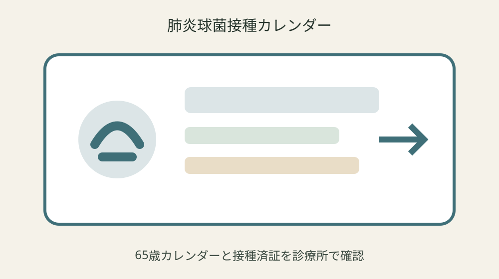
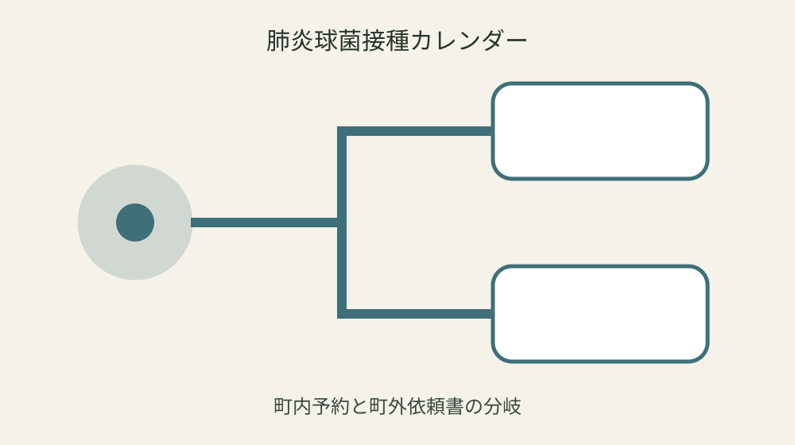

森町の令和8年度高齢者肺炎球菌接種｜65歳の期限と町外接種を一枚で管理する

結論：肺炎球菌接種カレンダーへ対象・基準日・手元資料・未確認事項を分け、最初の一問だけを森町へ確認します。令和8年度の高齢者肺炎球菌定期接種費を一部助成を起点に、実行直前の再確認までを一続きにしてください。
65歳の誕生日と接種可能期間を置く
65歳の誕生日と接種可能期間を置くでは、まず「令和8年度の高齢者肺炎球菌定期接種費を一部助成」という森町公式の条件を起点にします。肺炎球菌接種カレンダーには対象、日付、資料名、確認日を別欄で置き、制度名だけのメモにしません。手元の現物と公式説明が食い違う場合は、都合のよい方へ寄せず、差がある状態をそのまま残します。
実際の確認は、現物を見る人、電話する人、記録する人を決めてから始めます。過去に23価肺炎球菌ワクチンを接種した人は原則対象外も同じ行へ書き、誕生年度だけで対象期間を決めることを避けます。数字や固有名は読み上げて照合し、不明欄には推定値ではなく「未確認」と次の確認先を記します。 この判断も肺炎球菌接種カレンダーの更新対象です。
森町へ尋ねるときは「65歳の誕生日と接種可能期間を置くについて、手元ではここまで確認した」と一文で伝えます。そのうえで町外の相互乗入れ医療機関でも条件により利用可能が自分の案件にどう当てはまるかを一問だけ確認します。回答日、担当部署、再確認が必要な時期まで記録すれば、家族や同僚が同じ質問を繰り返さずに済みます。 この判断も肺炎球菌接種カレンダーの更新対象です。
肺炎球菌接種カレンダーの更新では旧版を消しません。本人確認書類を用意するを採用した根拠、変更前の記載、変更した日を並べます。公式ページの更新や個別事情で結論が変わることがあるため、実行直前に最新案内を見直し、確認できない場合は作業を一段止めます。
過去の23価接種歴を探す
過去の23価接種歴を探すでは、まず「対象は接種日時点で65歳の人」という森町公式の条件を起点にします。肺炎球菌接種カレンダーには対象、日付、資料名、確認日を別欄で置き、制度名だけのメモにしません。手元の現物と公式説明が食い違う場合は、都合のよい方へ寄せず、差がある状態をそのまま残します。
実際の確認は、現物を見る人、電話する人、記録する人を決めてから始めます。接種は本人の希望と医師の確認で進めるも同じ行へ書き、過去接種歴を空欄のまま進めることを避けます。数字や固有名は読み上げて照合し、不明欄には推定値ではなく「未確認」と次の確認先を記します。 この判断も肺炎球菌接種カレンダーの更新対象です。
森町へ尋ねるときは「過去の23価接種歴を探すについて、手元ではここまで確認した」と一文で伝えます。そのうえで町外接種は予防接種依頼書の事前申請が必要が自分の案件にどう当てはまるかを一問だけ確認します。回答日、担当部署、再確認が必要な時期まで記録すれば、家族や同僚が同じ質問を繰り返さずに済みます。 この判断も肺炎球菌接種カレンダーの更新対象です。
肺炎球菌接種カレンダーの更新では旧版を消しません。希望医療機関の住所・電話が分かる物を用意するを採用した根拠、変更前の記載、変更した日を並べます。公式ページの更新や個別事情で結論が変わることがあるため、実行直前に最新案内を見直し、確認できない場合は作業を一段止めます。
対象通知と本人確認書類を揃える
対象通知と本人確認書類を揃えるでは、まず「60歳以上65歳未満には免疫機能障害等の条件がある」という森町公式の条件を起点にします。肺炎球菌接種カレンダーには対象、日付、資料名、確認日を別欄で置き、制度名だけのメモにしません。手元の現物と公式説明が食い違う場合は、都合のよい方へ寄せず、差がある状態をそのまま残します。
実際の確認は、現物を見る人、電話する人、記録する人を決めてから始めます。指定医療機関へ事前予約するも同じ行へ書き、町外予約を依頼書より先に確定することを避けます。数字や固有名は読み上げて照合し、不明欄には推定値ではなく「未確認」と次の確認先を記します。 この判断も肺炎球菌接種カレンダーの更新対象です。
森町へ尋ねるときは「対象通知と本人確認書類を揃えるについて、手元ではここまで確認した」と一文で伝えます。そのうえで依頼書申請は接種予約前に行うが自分の案件にどう当てはまるかを一問だけ確認します。回答日、担当部署、再確認が必要な時期まで記録すれば、家族や同僚が同じ質問を繰り返さずに済みます。 この判断も肺炎球菌接種カレンダーの更新対象です。
肺炎球菌接種カレンダーの更新では旧版を消しません。相談先は健康こども課健康づくり係を採用した根拠、変更前の記載、変更した日を並べます。公式ページの更新や個別事情で結論が変わることがあるため、実行直前に最新案内を見直し、確認できない場合は作業を一段止めます。
指定医療機関へ予約する
指定医療機関へ予約するでは、まず「過去に23価肺炎球菌ワクチンを接種した人は原則対象外」という森町公式の条件を起点にします。肺炎球菌接種カレンダーには対象、日付、資料名、確認日を別欄で置き、制度名だけのメモにしません。手元の現物と公式説明が食い違う場合は、都合のよい方へ寄せず、差がある状態をそのまま残します。
実際の確認は、現物を見る人、電話する人、記録する人を決めてから始めます。町外の相互乗入れ医療機関でも条件により利用可能も同じ行へ書き、誕生年度だけで対象期間を決めることを避けます。数字や固有名は読み上げて照合し、不明欄には推定値ではなく「未確認」と次の確認先を記します。 この判断も肺炎球菌接種カレンダーの更新対象です。
森町へ尋ねるときは「指定医療機関へ予約するについて、手元ではここまで確認した」と一文で伝えます。そのうえで本人確認書類を用意するが自分の案件にどう当てはまるかを一問だけ確認します。回答日、担当部署、再確認が必要な時期まで記録すれば、家族や同僚が同じ質問を繰り返さずに済みます。 この判断も肺炎球菌接種カレンダーの更新対象です。
肺炎球菌接種カレンダーの更新では旧版を消しません。令和8年度の高齢者肺炎球菌定期接種費を一部助成を採用した根拠、変更前の記載、変更した日を並べます。公式ページの更新や個別事情で結論が変わることがあるため、実行直前に最新案内を見直し、確認できない場合は作業を一段止めます。

町外医療機関の相互乗入れを調べる
町外医療機関の相互乗入れを調べるでは、まず「接種は本人の希望と医師の確認で進める」という森町公式の条件を起点にします。肺炎球菌接種カレンダーには対象、日付、資料名、確認日を別欄で置き、制度名だけのメモにしません。手元の現物と公式説明が食い違う場合は、都合のよい方へ寄せず、差がある状態をそのまま残します。
実際の確認は、現物を見る人、電話する人、記録する人を決めてから始めます。町外接種は予防接種依頼書の事前申請が必要も同じ行へ書き、過去接種歴を空欄のまま進めることを避けます。数字や固有名は読み上げて照合し、不明欄には推定値ではなく「未確認」と次の確認先を記します。 この判断も肺炎球菌接種カレンダーの更新対象です。
森町へ尋ねるときは「町外医療機関の相互乗入れを調べるについて、手元ではここまで確認した」と一文で伝えます。そのうえで希望医療機関の住所・電話が分かる物を用意するが自分の案件にどう当てはまるかを一問だけ確認します。回答日、担当部署、再確認が必要な時期まで記録すれば、家族や同僚が同じ質問を繰り返さずに済みます。 この判断も肺炎球菌接種カレンダーの更新対象です。
肺炎球菌接種カレンダーの更新では旧版を消しません。対象は接種日時点で65歳の人を採用した根拠、変更前の記載、変更した日を並べます。公式ページの更新や個別事情で結論が変わることがあるため、実行直前に最新案内を見直し、確認できない場合は作業を一段止めます。
依頼書を予約前に申請する
依頼書を予約前に申請するでは、まず「指定医療機関へ事前予約する」という森町公式の条件を起点にします。肺炎球菌接種カレンダーには対象、日付、資料名、確認日を別欄で置き、制度名だけのメモにしません。手元の現物と公式説明が食い違う場合は、都合のよい方へ寄せず、差がある状態をそのまま残します。
実際の確認は、現物を見る人、電話する人、記録する人を決めてから始めます。依頼書申請は接種予約前に行うも同じ行へ書き、町外予約を依頼書より先に確定することを避けます。数字や固有名は読み上げて照合し、不明欄には推定値ではなく「未確認」と次の確認先を記します。 この判断も肺炎球菌接種カレンダーの更新対象です。
森町へ尋ねるときは「依頼書を予約前に申請するについて、手元ではここまで確認した」と一文で伝えます。そのうえで相談先は健康こども課健康づくり係が自分の案件にどう当てはまるかを一問だけ確認します。回答日、担当部署、再確認が必要な時期まで記録すれば、家族や同僚が同じ質問を繰り返さずに済みます。 この判断も肺炎球菌接種カレンダーの更新対象です。
肺炎球菌接種カレンダーの更新では旧版を消しません。60歳以上65歳未満には免疫機能障害等の条件があるを採用した根拠、変更前の記載、変更した日を並べます。公式ページの更新や個別事情で結論が変わることがあるため、実行直前に最新案内を見直し、確認できない場合は作業を一段止めます。
接種日と体調確認欄を作る
接種日と体調確認欄を作るでは、まず「町外の相互乗入れ医療機関でも条件により利用可能」という森町公式の条件を起点にします。肺炎球菌接種カレンダーには対象、日付、資料名、確認日を別欄で置き、制度名だけのメモにしません。手元の現物と公式説明が食い違う場合は、都合のよい方へ寄せず、差がある状態をそのまま残します。
実際の確認は、現物を見る人、電話する人、記録する人を決めてから始めます。本人確認書類を用意するも同じ行へ書き、誕生年度だけで対象期間を決めることを避けます。数字や固有名は読み上げて照合し、不明欄には推定値ではなく「未確認」と次の確認先を記します。 この判断も肺炎球菌接種カレンダーの更新対象です。
森町へ尋ねるときは「接種日と体調確認欄を作るについて、手元ではここまで確認した」と一文で伝えます。そのうえで令和8年度の高齢者肺炎球菌定期接種費を一部助成が自分の案件にどう当てはまるかを一問だけ確認します。回答日、担当部署、再確認が必要な時期まで記録すれば、家族や同僚が同じ質問を繰り返さずに済みます。 この判断も肺炎球菌接種カレンダーの更新対象です。
肺炎球菌接種カレンダーの更新では旧版を消しません。過去に23価肺炎球菌ワクチンを接種した人は原則対象外を採用した根拠、変更前の記載、変更した日を並べます。公式ページの更新や個別事情で結論が変わることがあるため、実行直前に最新案内を見直し、確認できない場合は作業を一段止めます。

接種済証を次年度へ残す
接種済証を次年度へ残すでは、まず「町外接種は予防接種依頼書の事前申請が必要」という森町公式の条件を起点にします。肺炎球菌接種カレンダーには対象、日付、資料名、確認日を別欄で置き、制度名だけのメモにしません。手元の現物と公式説明が食い違う場合は、都合のよい方へ寄せず、差がある状態をそのまま残します。
実際の確認は、現物を見る人、電話する人、記録する人を決めてから始めます。希望医療機関の住所・電話が分かる物を用意するも同じ行へ書き、過去接種歴を空欄のまま進めることを避けます。数字や固有名は読み上げて照合し、不明欄には推定値ではなく「未確認」と次の確認先を記します。 この判断も肺炎球菌接種カレンダーの更新対象です。
森町へ尋ねるときは「接種済証を次年度へ残すについて、手元ではここまで確認した」と一文で伝えます。そのうえで対象は接種日時点で65歳の人が自分の案件にどう当てはまるかを一問だけ確認します。回答日、担当部署、再確認が必要な時期まで記録すれば、家族や同僚が同じ質問を繰り返さずに済みます。 この判断も肺炎球菌接種カレンダーの更新対象です。
肺炎球菌接種カレンダーの更新では旧版を消しません。接種は本人の希望と医師の確認で進めるを採用した根拠、変更前の記載、変更した日を並べます。公式ページの更新や個別事情で結論が変わることがあるため、実行直前に最新案内を見直し、確認できない場合は作業を一段止めます。
良い点
肺炎球菌接種カレンダーに確認済み事実と未確認事項を分けると、制度の対象外を恐れて何もしない状態から、次の一問を決める状態へ進めます。
60歳以上65歳未満には免疫機能障害等の条件があるという具体条件を家族で共有でき、担当が替わっても根拠をたどれます。
期限、現物、回答日が一枚に集まり、書類の取り直しと問い合わせの重複を減らせます。
公式資料だけで断定できない個別条件を未確認として残せることも、この方法の利点です。
注文したい点
森町の案内には制度条件が整理されていますが、初めて手続きをする人には、個別案件の順番が読み取りにくい部分があります。
誕生年度だけで対象期間を決めることを避けるため、記入例や受付後の流れも同じページから確認できるとさらに使いやすくなります。
年度更新時には変更箇所と変更日が目立つ表示になると、保存した旧資料との取り違えを減らせます。
これは現行制度の否定ではなく、利用者が正しい窓口へ一度で到達するための改善要望です。
対案・結論
結論は、肺炎球菌接種カレンダーを今日一枚作り、最初の未確認欄だけを森町へ尋ねることです。
全条件を一度に覚えず、公式事実、手元資料、窓口回答、次の期限を四列に分けます。
接種は本人の希望と医師の確認で進めるを確認しても、個別可否は案件ごとに変わり得るため、支出や申請の直前に再確認します。
確認が終わったら旧版を残し、次回の担当が同じ根拠から続けられる状態を完成とします。
大石の視点
ここまでの制度条件は森町公式資料から確認した事実です。以下は私、大石浩之の実務提案であり、森町の公式見解ではありません。
私は肺炎球菌接種カレンダーを紙一枚から始め、原本を動かさず、写真や写しへ番号を付ける方法を勧めます。
未確認欄は失敗ではありません。確認先と期限のある空欄は、根拠のない推測より実用的です。
個人情報を含む場合は内部保管版と提出版を分け、必要な範囲だけを相手へ渡してください。
よくある質問
肺炎球菌接種カレンダーは何から始めますか。
対象者または対象物、基準日、手元資料を一行にし、最初の公式条件「令和8年度の高齢者肺炎球菌定期接種費を一部助成」と照合します。
資料が足りなくても肺炎球菌接種カレンダーを作れますか。
作れます。不足欄を推測で埋めず、必要資料、確認先、期限を書けば、後から安全に再開できます。
公式ページを一度保存すれば十分ですか。
十分ではありません。対象は接種日時点で65歳の人などの条件は更新される場合があるため、実行直前に現行ページを確認します。
家族や担当者へ渡すとき何を添えますか。
確認済み事実、未確認事項、次の担当、期限、原本保管場所、町へ尋ねた日と回答を添えます。
公式情報源
- 令和8年度高齢者肺炎球菌定期予防接種（2026年8月20日確認）
- 令和8年度集団健診（2026年8月20日確認）
最終確認日：2026-08-20 ／ 公表事実と執筆者の解釈・意見を分けて記載しています。